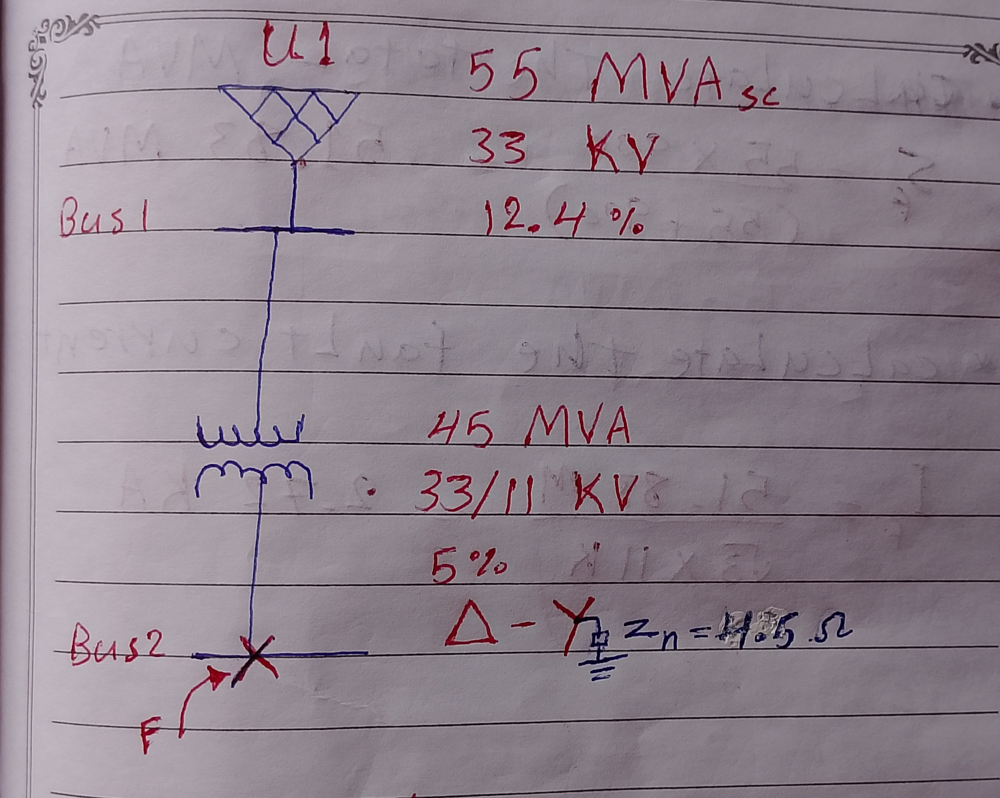
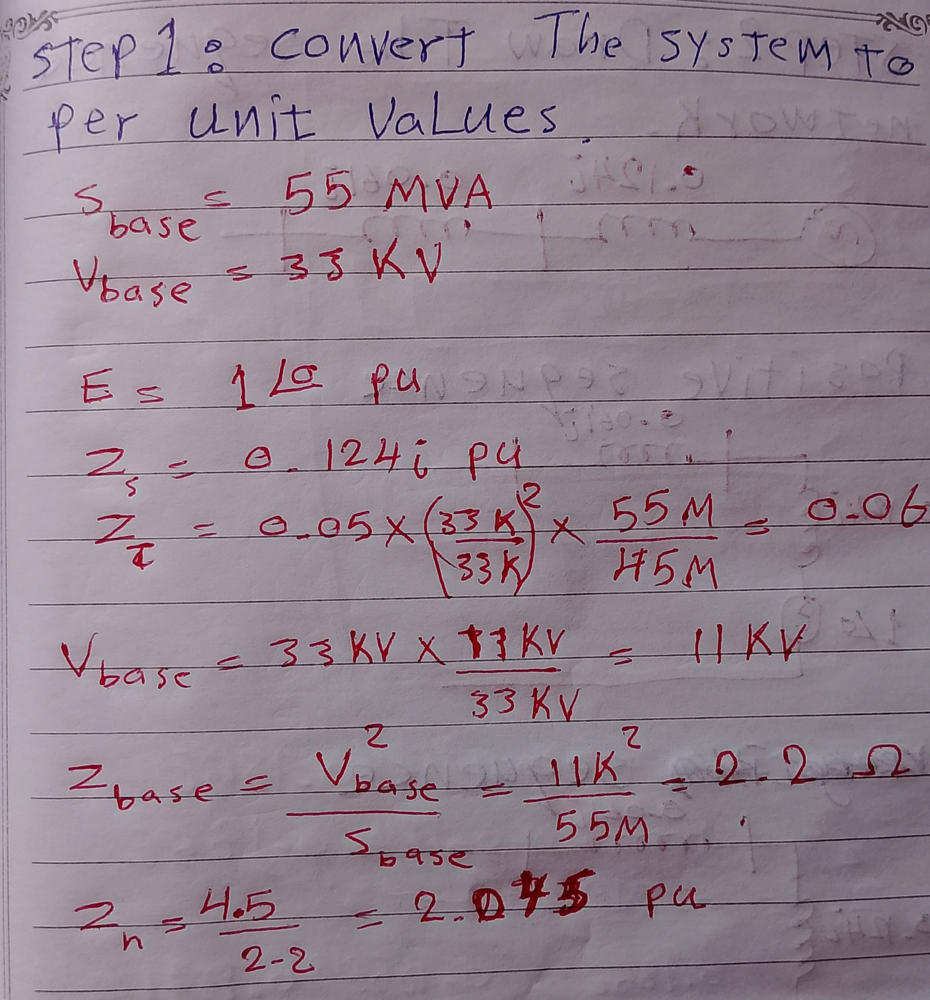
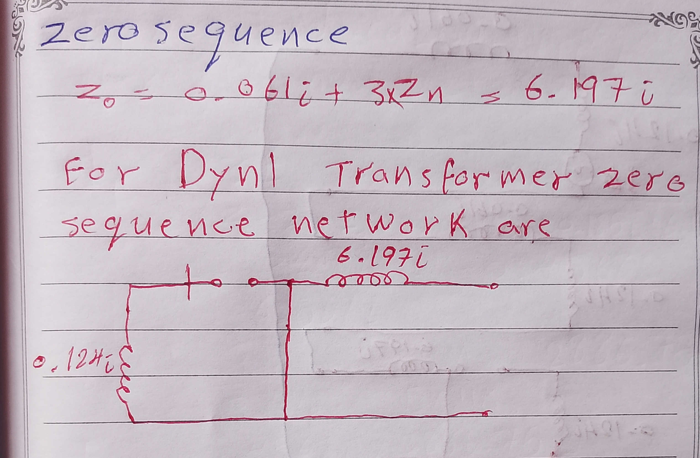

-
Hand Calculation of a Single-Line-to-Ground Fault Using the PER-UNIT Method
2026-07-13
In this article, I will calculate a single-line-to-ground fault and estimate the short-circuit current using the PER-UNIT method. The per-unit system is a system used in electrical engineering to express system quantities as fractions of a defined base unit quantity, simplifying calculations. Read More
From our previous example, where we hand-calculated a three-line-to-ground fault on the system below, we are going to calculate the fault current using these simple steps:
First, convert the system to per unit values.
Second, Draw the sequence network.

Third, Interconnect the unfaulted network.
Note that for single-line-to-ground fault the sequence networks are conected in series.
Finally, Hand calculate the sequence current. Using This Formula :
I_fault = 3*E / Z_total
Conclusion
The PER-UNIT method and Symmetrical Components provaide us with powerfull and esay way to anlayze Unsymmetrical Fault and calculate short circuit current .